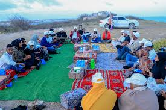

Dalxiiska wadankaaga
Somaliya waxey leedahey goobaha dalxiiska ee dabiiciga ah sida xeebaha quruxda badan, buuraha, iyo, dhulka cagaaran. Dalxiisayaasha waxey ku raaxeystaan cimilada wanaagsan, dhaqanka hodanka, iyo marti-soorka soomalida. Qaar kamida meelaha la booqdo Eyl, caluula, xaabo, Geesaley, Mareero, xeebta liido, xeebaha Kismaayo.